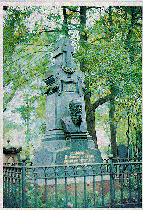

Dostoevsky

John [12:24] Verily, verily, I say unto you, Except a corn of wheat fall into the ground and die, it abideth alone: but if it die, it bringeth forth much fruit.Dostoevsky (RU 351)
Prof. Thomas Beyer
The goal in this course is for you to read several major works by Fyodor Dostoyevsky.
You should read actively and carefully, think about what you are reading,
record your thoughts and be prepared to articulate those thoughts in class,
both orally and in written form.
All reading must be completed before the beginning of each class.
As you read you should keep your thoughts, observations, questions
and comments on sheets of loose-leaf paper to be kept in a binder
which you bring to class for every meeting.
(While these thoughts are personal, they are not private!)
For each class you should prepare a one page typed journal entry. This one page entry should contain a twenty five word or less description of the "who, what, where, when and why" of the reading assignment. This should be followed by a single well-constructed paragraph analyzing some aspect of the work which appealed to you. Finally, write a single question at the end of each page to serve as a discussion question for the entire class. I suggest that you prepare the paper off-line with a good word processing program. Be sure to check spelling, grammar and content before you save as a text file. This one page entry must be submitted via e-mail to me at beyer@midd-unix.middlebury.edu before the beginning of each class. There will also be a number of research projects and a final report assigned during the semester.
If you read all the works on time, do all the informal and formal
written entries on time, attend and participate actively in each class,
you can expect a grade of B or better.The "better" depends upon
clear demonstration of exceptional effort and care in your work.
Failure to attend every class
without a compelling reason will dramatically influence your grade.
Books for course:
(See list of works in our library by Dostoevsky)
(See list of works in our library about Dostoevsky)
- Notes From the Underground (Signet)
- Crime and Punishment (Norton)
- The Idiot (Oxford)
- Devils (Oxford)
- The Brothers Karamazov (Norton)
In addition you will want to have at hand a copy of the Old and New Testaments.
You may either purchase a copy of the Bible or follow the
World Wide Web links to a Bible Browser for
identifying the location of words or quotations and
then consulting one of the versions of the Bible.
Reading Assignments
Sep. 10 Introduction to the Man and His Work
Sep. 12 "White Nights" in NFU
Sep. 17 Selections from House of the Dead in NFU
Sep. 19 Notes From the Underground, I
Sep. 24 Notes From the Underground, II
Sep. 26 Crime and Punishment, I
Oct. 1 Crime and Punishment, II, III
Oct. 3 Crime and Punishment, IV
Oct. 8 Crime and Punishment, V, VI, Epilogue
Oct. 10 The Idiot, I
Oct. 15 The Idiot, II
Oct. 22 The Idiot, III
Oct. 24 The Idiot, IV
Oct. 29 Devils, I
Oct. 31 Devils, II, 1-8
Nov. 5 Devils, II, -10; III, 1-4
Nov. 7 Devils, III, -8
Nov. 12 The Brothers Karamazov, I
Nov. 14 The Brothers Karamazov, II
Nov. 19 The Brothers Karamazov, III
Nov. 26 The Brothers Karamazov, IV
Dec. 3 Final reports
Dec. 5 Final reports
Student Feedback
Class Information:
| Instructor: | Professor Beyer |
| Office: | Freeman T3 |
| Office Hours: | Monday 11:00 - 12:00; Wednesday 9:30-10:00, 11:00 - 12:00 |
| Office Phone: | (802) 443-5536 |
| Fax Number | (802)443-5394 |
| email address | tom.beyer@middlebury.edu |
| Home Phone: | (802) 388-7832; Restrictions:please call only in the case of emergencies |
| Department Secretary | (802) 443-5532 |
Course Name - RU351
Professor Beyer
Middlebury College